10 Area of Triangles
Right triangles
We have learnt in class 5, how we can calculate the area of rectangles. What is the
area of the rectangle below?
The area of a rectangle is the product of its width and height, right? So, the area of
this rectangle is 6 × 4 = 24 square centimetres.
Suppose we cut it horizontally through its middle, to make two smaller rectangles:
135
Standard - VII
135
Page 32
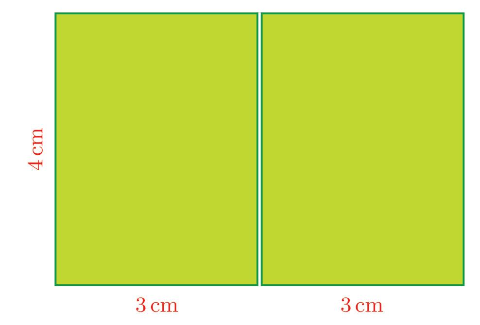
Figure fig_ch03_p032_01 (Page 32)
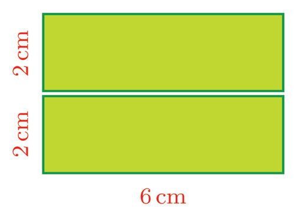
Figure fig_ch03_p032_02 (Page 32)
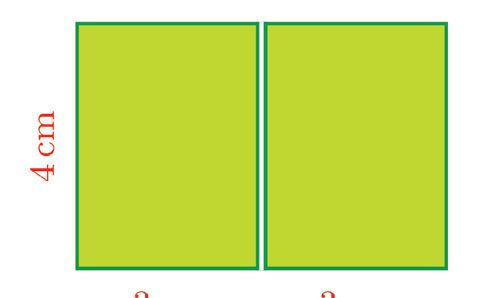
Figure fig_ch03_p032_03 (Page 32)
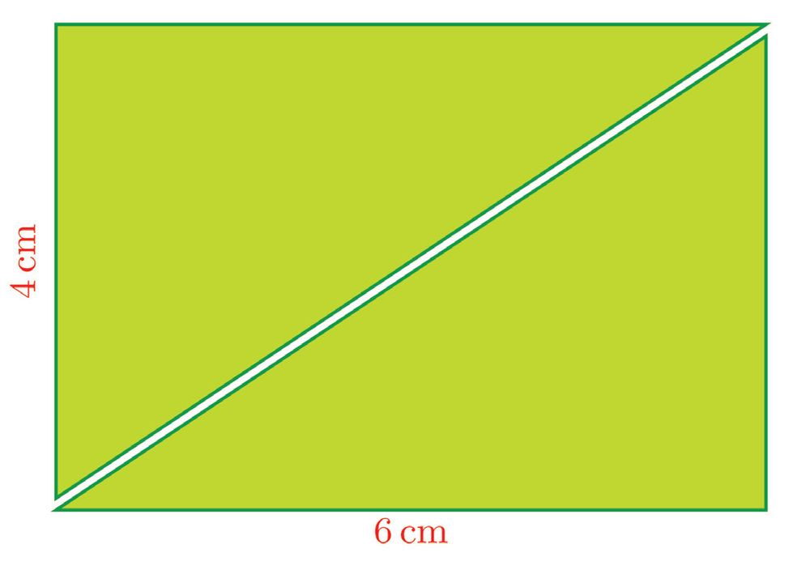
Figure fig_ch03_p032_04 (Page 32)
Mathematics
We can compute the area of each small rectangle as 6 × 2 = 12 square centimetres.
There’s another way to see this.
Each small rectangle is half the large rectangle, isn’t it? So, the area must also be
half. This leads to the calculation of the area of the small rectangles as 24 × 12 = 12
What if we cut the large rectangle like this?
Area and perimeter
When we cut a rectangle horizontally
through its middle, we get two rectangles
of half the area:
We can calculate the area of a small rectangle
by finding the product of its sides as
3 × 4 = 12 square centimetres, or just find Is the perimeter of a small rectangle equal
the half the area of the original rectangle as to half the perimeter of the large rectangle?
What if we cut like this?
24 × 12 =12 square centimetres
Now suppose we cut the rectangle like this:
What is the perimeter of each small
rectangle? Can we cut out a rectangle
of half the perimeter from the large
rectangle?
Now the pieces are not rectangles,
but triangles; yet each is half the
rectangle isn’t it?
Cut a rectangle from a thick sheet of paper and cut it along the diagonal like this. The
triangles can be placed with one exactly covering the other.
136
Standard - VII
136
Page 33
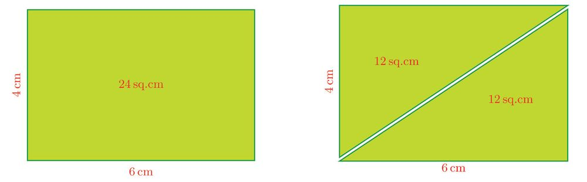
Figure fig_ch03_p033_01 (Page 33)
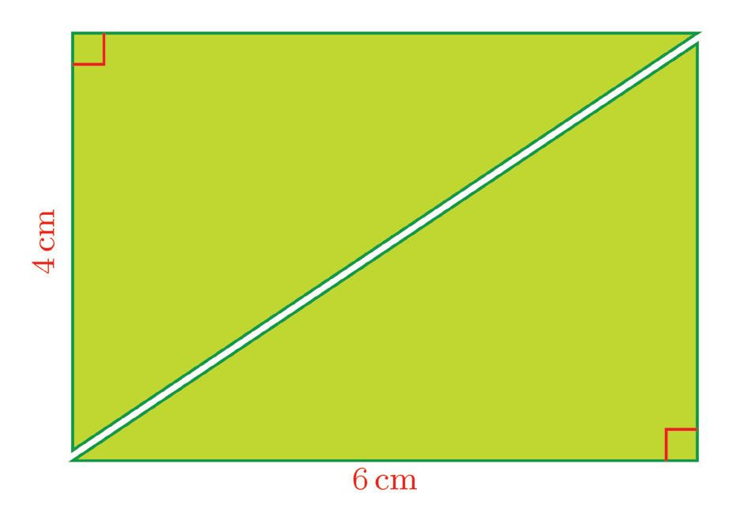
Figure fig_ch03_p033_02 (Page 33)
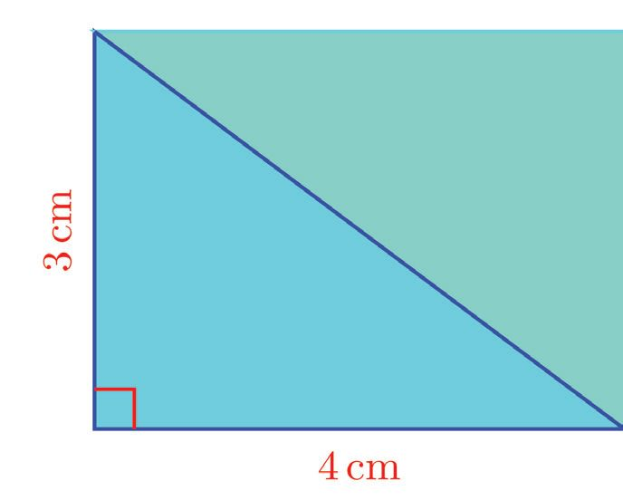
Figure fig_ch03_p033_03 (Page 33)
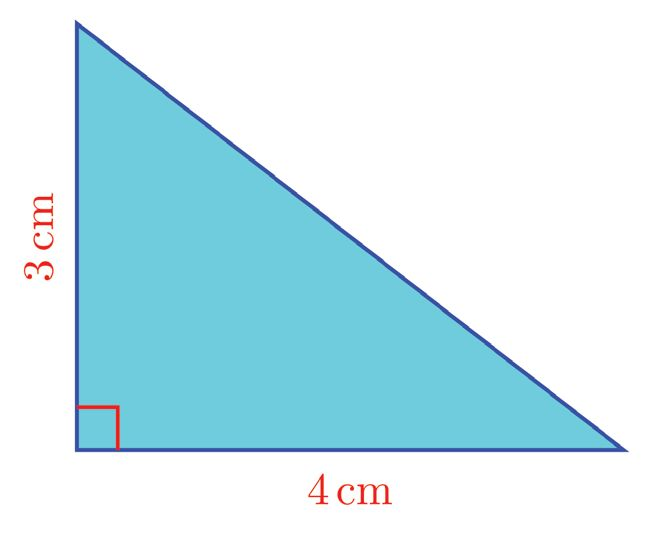
Figure fig_ch03_p033_04 (Page 33)
Area of Triangles
So the area of each triangle is 24 × 12 = 12 square centimetres.
Notice anything special about these triangles?
The adjacent sides of the rectangle are perpendicular to each other; so, in each of
these triangles, two of the sides are perpendicular to each other:
Such a triangle is called a right triangle.
See this right triangle:
Can you calculate its area?
We can think of this as half a rectangle:
In other words, it can be made a rectangle by putting a
copy of it on top.
The area of the rectangle is 4 × 3 = 12 square centimetres;
and the triangle is half of the rectangle. So, its area is
12 × 12 = 6 square centimetres.
137
Standard - VII
137
Page 34
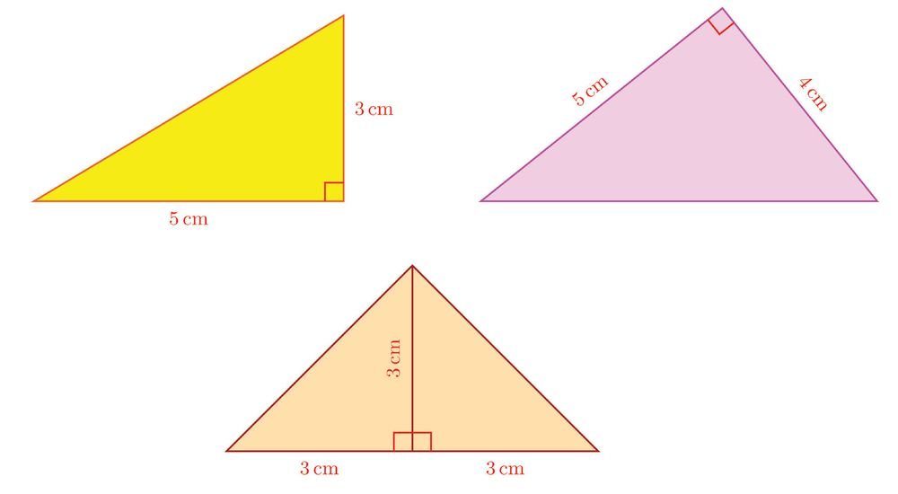
Figure fig_ch03_p034_01 (Page 34)
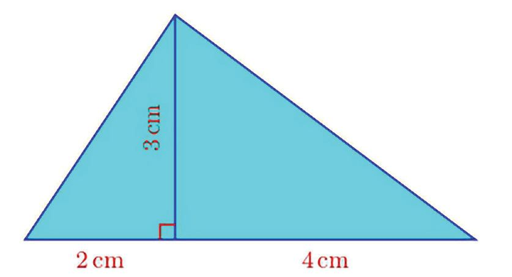
Figure fig_ch03_p034_02 (Page 34)
Mathematics
Any right triangle can be seen as half a rectangle like this. How do we compute its
area then?
• The width and height of the rectangle are the perpendicular sides of the
triangle
• The area of the rectangle is the product of its width and height
• The area of the right triangle is half the area of the rectangle
Putting all these together, we can calculate the area of a right triangle without
imagining it as half a rectangle every time:
The area of a right triangle is half the product of its perpendicular sides
Now can’t you calculate the area of the triangles shown below?
Base and altitude
What is the area of this triangle?
138
Standard - VII
138
Page 35
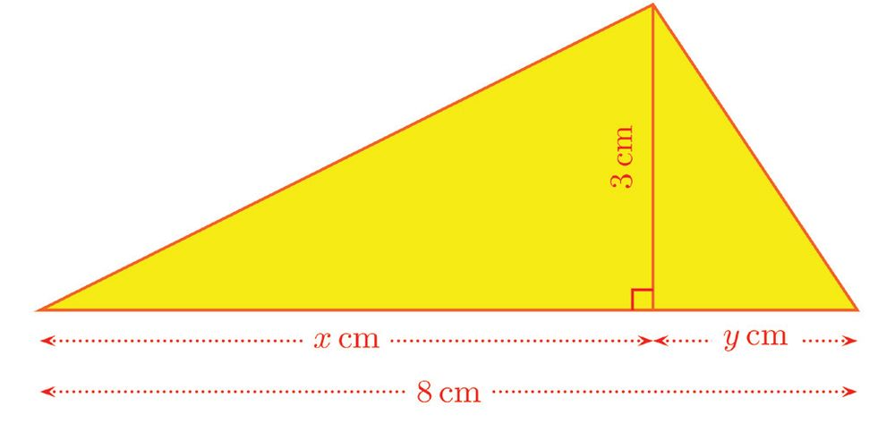
Figure fig_ch03_p035_01 (Page 35)
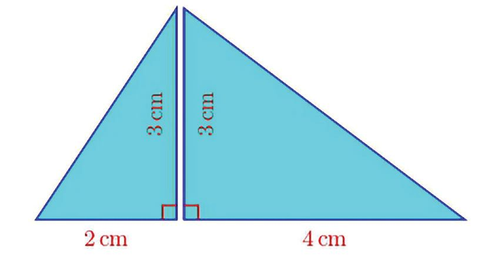
Figure fig_ch03_p035_02 (Page 35)
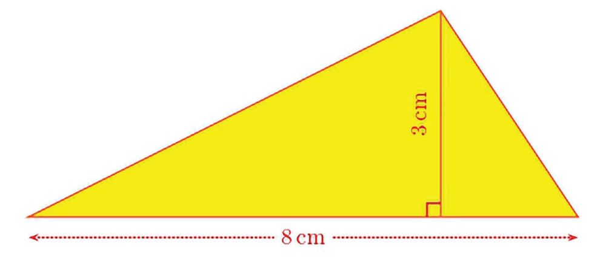
Figure fig_ch03_p035_03 (Page 35)
Area of Triangles
We can consider this triangle as two smaller right triangles joined together:
And we know how to calculate the area of these:
Area of the smaller right triangle = 12 × 2 × 3 = 3 square centimetres
Area of the larger right triangle = 12 × 4 × 3 = 6 square centimetres
Adding these two, we get the area of the original triangle:
Area of the original triangle = 3 + 6 = 9 square centimetres
Now how do we calculate the area of this triangle?
Here we don’t know the lengths of the
bottom sides of the right triangles; so
we can’t compute the area as before.
Let’s take the lengths of these sides as
x centimetres and y centimetres:
Then
Area of the larger right triangle = 12 × x × 3 = 32 x square centimetres
Area of the smaller right triangle = 12 × y × 3 = 32 y square centimetres
To get the area of the whole triangle we must add these two areas:
3
3
3
2 x + 2 y = 2 (x + y)
But x + y = 8. So the area of the triangle is
3
2 × 8 = 12 square centimetres
139
Standard - VII
139
Page 36
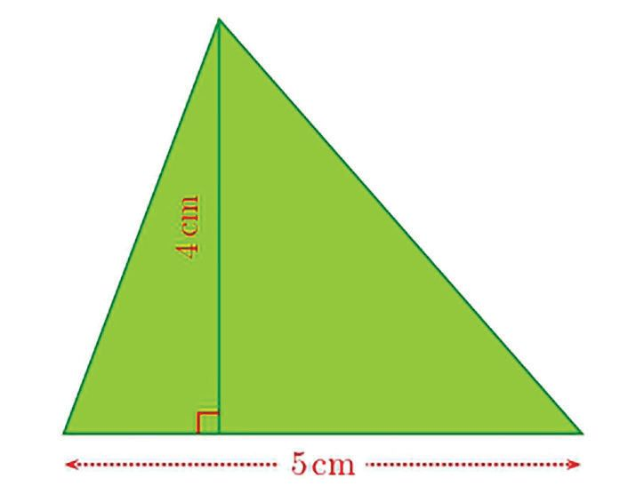
Figure fig_ch03_p036_01 (Page 36)
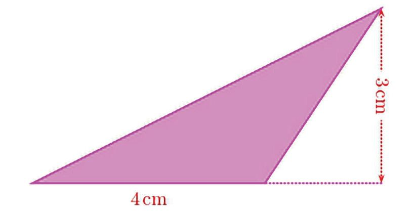
Figure fig_ch03_p036_02 (Page 36)
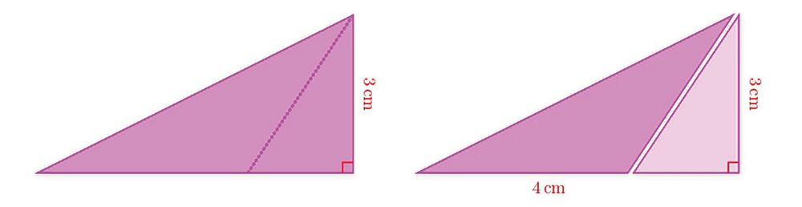
Figure fig_ch03_p036_03 (Page 36)
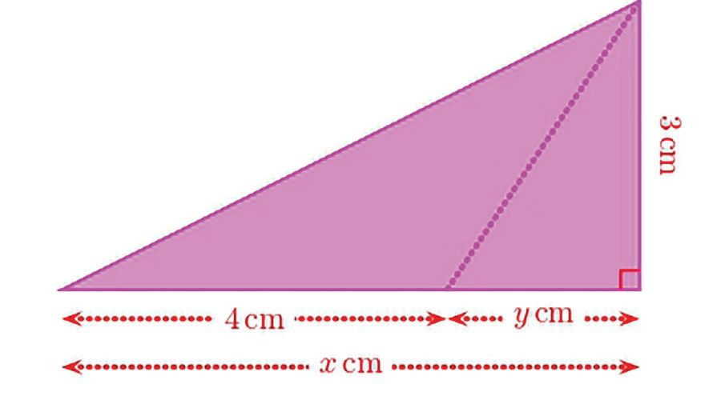
Figure fig_ch03_p036_04 (Page 36)
Mathematics
Like this, can you calculate the area of the triangle shown below?
What if the triangle is like this?
In all the problems seen so far, we considered the original triangles as two small right
triangles joined together; in this case, we must consider it as a small right triangle cut
away from a larger right triangle:
Let’s take the length of the bottom side of the larger right triangle as x centimetres
and the length of the bottom side of the smaller right triangle as y centimetres:
140
Standard - VII
140
Page 37
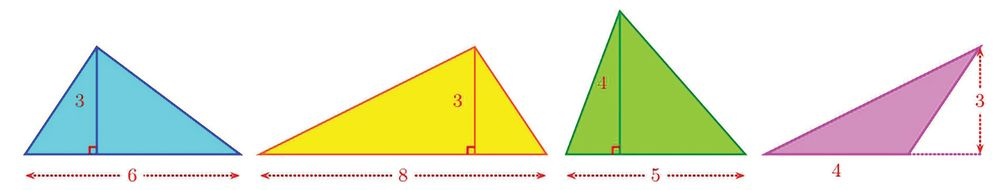
Figure fig_ch03_p037_01 (Page 37)
Area of Triangles
Then
Area of the larger right triangle = 12 × x × 3 = 32 x square centimetres
Area of the smaller right triangle = 12 × y × 3 = 32 y square centimetres
To get the area of the first triangle, we must subtract the area of the smaller right
triangle from the area of the larger right triangle:
3
3
3
2 x − 2 y = 2 (x - y)
Since x − y = 4
we get this as 32 × 4 = 6. Thus the area of the original triangle is 6 square centimetres.
Let’s look at all these problems and solutions together:
Area
1
2 ×6×3=9
Area
1
2 × 8 × 3 = 12
Area
1
2 × 5 × 4 = 10
Area
1
2 ×4×3=6
Changing the lengths does not alter the method of finding areas. So we can make a
general statement about computing the area of a triangle:
The area of any triangle is half the product of one of the sides and the height from
this side to the opposite vertex
If we name the side used to compute the area, the base of the triangle and the height
to the opposite vertex, the altitude, then this can be shortened a bit:
The area of any triangle is half the product of the base and the altitude
Now try these problems:
(1) Find the areas of the triangles shown below:
(2) What is the area of the triangle shown below?
(i) Draw a right triangle of the same area
(ii) Draw a triangle of the same area with
one angle greater than a right angle
Parallel lines
Draw a triangle of base 6 and area 12
in GeoGebra. Draw a right triangle
and a triangle with two sides equal with the
Can you draw a triangle with one side same measures. (It is convenient to use the
Grid option for this)
8 centimetres and area 12 square centimetres?
142
Standard - VII
142
Page 39
Figure fig_ch03_p039_01 (Page 39)
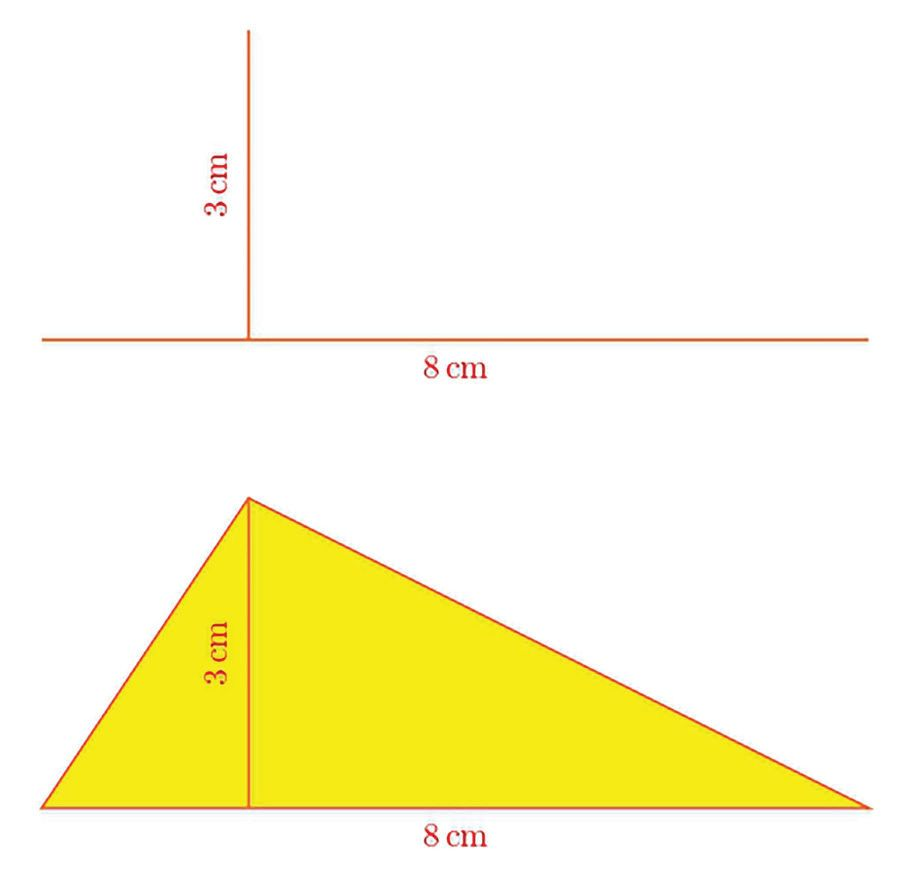
Figure fig_ch03_p039_02 (Page 39)
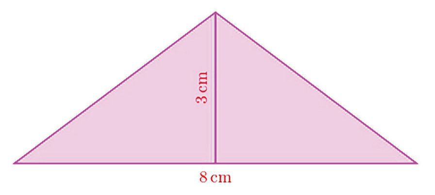
Figure fig_ch03_p039_03 (Page 39)
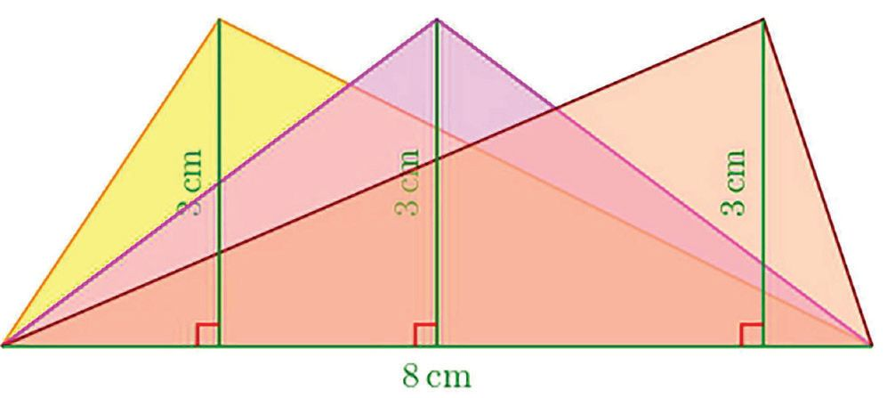
Figure fig_ch03_p039_04 (Page 39)
Area of Triangles
Let’s think about it like this:
• Let’s take the base as 8 centimetres
*
For the area to be 12 square centimetres, what should be the altitude?
*
The product of base and altitude must be twice the area
• Altitude should be 3 centimetres
(Remember seeing such a triangle earlier?)
So to draw such a triangle, first draw a
line 8 centimetres long and then from
some point on it, draw a perpendicular of
height 3 centimetres; Joining the top of the
perpendicular to the ends of the bottom line
makes our triangle, right?
By changing the position of the perpendicular,
we can draw another such triangle, can’t we?
In GeoGebra draw line AB of length
8 and point C at a height 3 above it.
Draw a line parallel to AB through
The lengths of the left and right sides are C. (Choose the Parallel Line tool; and click
changed; but since the base and altitude remain on AB and C.) Mark a point D on this line.
Use the Polygon tool to draw triangle ABD.
the same, the area is not changed.
By choosing the Area tool and clicking
By drawing several perpendiculars, can’t we inside the triangle, we get its area. Change
the position of D on the line. Does the area
draw many such triangles?
change?
By choosing the Distance or Length tool
and clicking inside the triangle, we get its
perimeter. What is the minimum perimeter
when we change the position of D? At what
position of D is the perimeter maximum?
143
Standard - VII
143
Page 40
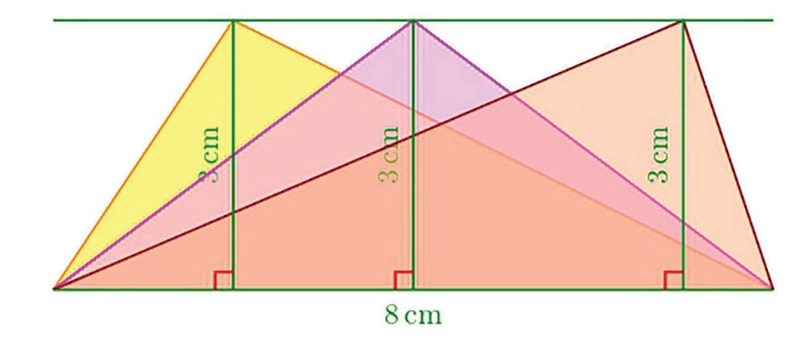
Figure fig_ch03_p040_01 (Page 40)
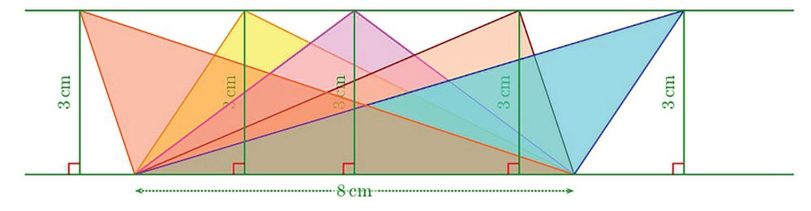
Figure fig_ch03_p040_02 (Page 40)
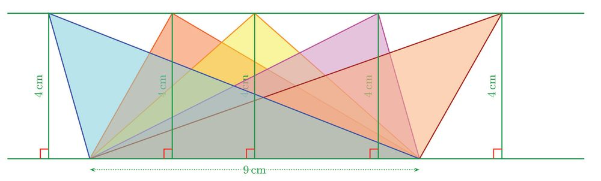
Figure fig_ch03_p040_03 (Page 40)
Mathematics
The top vertices of all these triangles are at the same distance from the base, right?
So, if we join them, we get a line parallel to the base:
If we extend this line and join any point on it to the endpoints of the bottom line, we
get a triangle of base 8 centimetres and altitude 3 centimetres; that is, a triangle of
base 8 centimetres and area 12 square centimetres:
We can draw triangles of other bases and areas in the same way. For example, triangles
of base 9 centimetres and area 18 square centimetres can be drawn like this:
This gives us a general result:
All triangles with the same base and third vertex on a line parallel to the base, have
the same area
In all the pictures above, we draw the base as horizontal. The above result is true
even if the base is slanted:
144
Standard - VII
144
Page 41
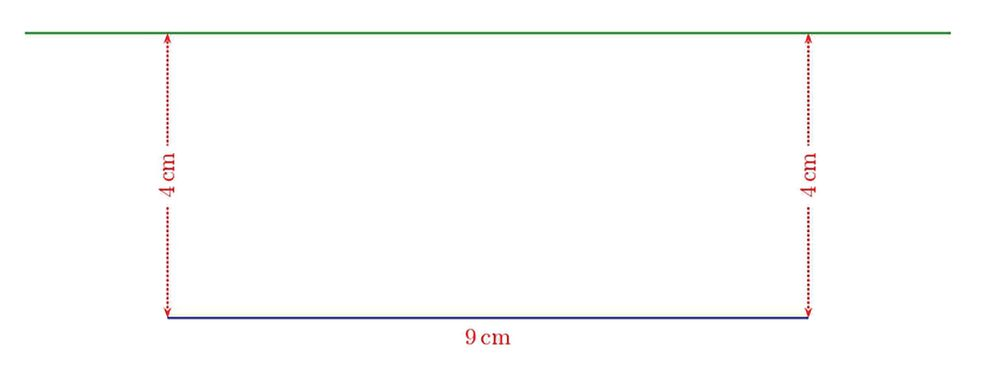
Figure fig_ch03_p041_01 (Page 41)
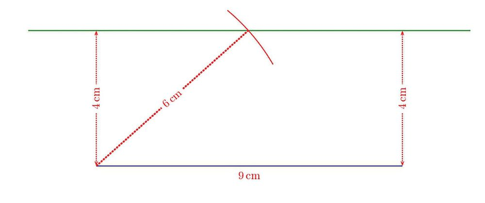
Figure fig_ch03_p041_02 (Page 41)
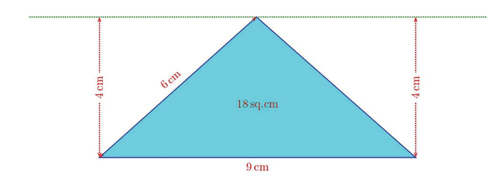
Figure fig_ch03_p041_03 (Page 41)
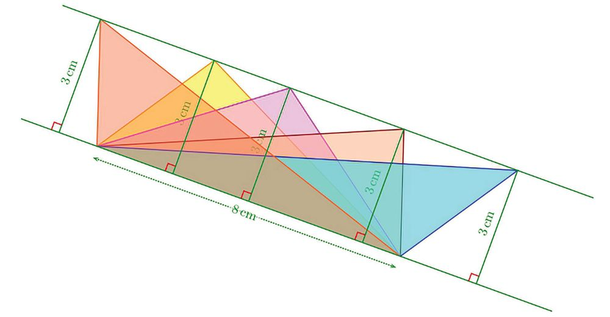
Figure fig_ch03_p041_04 (Page 41)
Area of Triangles
Now let’s look at some applications of this result.
We have drawn several triangles
with one side 9 centimetres and area
18 square centimetres. What if it is
further required that another side
should be 6 centimetres?
Look at the picture above. Any point on the top line can be joined to the endpoints of
the bottom line to get a triangle of area 18 square centimetres.
How do we make the left side of such a triangle 6 centimetres?
Can you draw such a triangle with the right side 6 centimetres instead?
Let’s look at another problem:
You know how to draw a triangle of sides 4 centimetres, 5 centimetres and 6
centimetres:
To calculate the area of this triangle, we need to measure its height.
Without calculating the area, can you draw a right triangle of the same area?
It is enough that the two triangles must have the same base and height. To make the
heights equal, we need only draw the line through the vertex, parallel to the base:
Can you draw a right triangle of the same area with base 4 centimetres?
And another with base 5 centimetres?
Now try these problems:
(1) Draw a triangle of sides 3, 4 and 6 centimetres. Draw three different right triangles
of the same area.
(2) How many different triangles can be drawn with two sides 8 centimetres,
6 centimetres and area 12 square centimetres? What if the area is to be 24 square
centimetres?
(3) Draw the triangle below in the notebook:
Draw triangles ABP, BCQ and CAR of the
same area with angles as given below:
(i) ∠BAP = 90°
(iii) ∠ACR = 30°